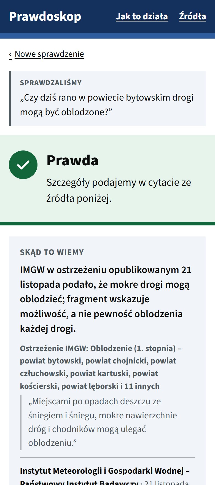
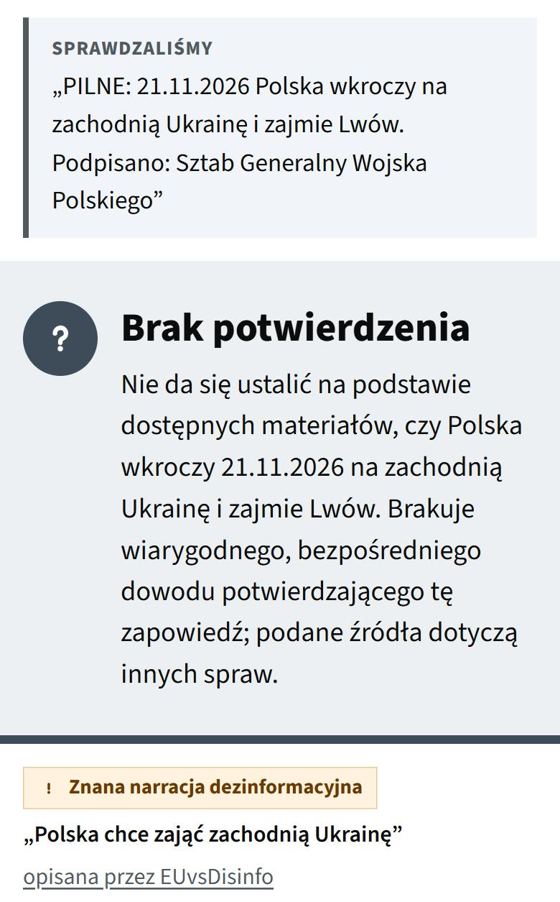

HackNation 2026 · zadanie MSZ
Każda odpowiedź ma źródło. A gdy go nie ma, mówimy to wprost.
Na żywo
Ostrzeżenia IMGW i nowe weryfikacje Demagoga, co 10 minut
Weryfikacje
FakeNews.pl, Pravda i znane narracje EUvsDisinfo
Urzędowe
Komunikaty gov.pl: RCB, ministerstwa, sanepid, urzędy
Gotowe na WhatsApp
Adapter gotowy. Uruchomienie wymaga konta Meta Business
Autor: Konrad Król · prawdowid-hacknation.fly.dev
Problem
RCB · 2018
SMS wzywający mężczyzn do urzędów gmin. RCB: „nie wysyłało Alertu RCB” tej treści.
RCB · 2024
SMS-y podszywające się pod Alert RCB. Prawdziwy alert nie zawiera linków.
Urząd Miejski Wrocławia · 2026
Fałszywi „kurierzy z urzędu” sprawdzają, kiedy ktoś będzie w domu.
Obywatel nie wie, komu wierzyć. Komunikat jest na jednej stronie, sprostowanie na drugiej, a fact-check pojawia się po dniach.
Dla obywatela
1
Wklejasz SMS, post albo pytanie.
2
Dostajesz odpowiedź w jednym słowie.
3
Widzisz cytat, wydawcę i link do źródła.
Prawda
Nieprawda
Wprowadza w błąd
Brak potwierdzenia
Nie do sprawdzenia
Większy tekst · wysoki kontrast · czytanie na głos

Jak to działa
Wklejasz wiadomość albo pytanie.
Tylko w zatwierdzonych źródłach: urzędy, samorządy, fact-checki.
Prostym zdaniem i dokładnym cytatem. Gdy dowodu brak, mówimy to wprost.
Sztuczna inteligencja pisze odpowiedź, a program sprawdza, czy cytat naprawdę jest w źródle.
Jakość dowodów
Program sprawdza, czy cytat występuje w źródle słowo w słowo.
Liczba bez pokrycia w cytacie znika z odpowiedzi.
Zamiast zgadywać, mówimy „Brak potwierdzenia” i co jest potrzebne.
21 z 22
zgodnych werdyktów tam, gdzie w bazie jest źródło
0 z 8
fałszywych werdyktów, gdy w bazie nie ma źródła
44 z 44
cytatów dosłownie w źródle po kontroli programu
52 pytania (32 z zestawu testowego i 20 napisanych przed testem), baza 575 dokumentów, 22.11.2026.
Moduł kryzysowy
Różnie sformułowane pytania o to samo zdarzenie.
Moderator widzi licznik i znacznik „Szybko rośnie”.
Nowe ostrzeżenie IMGW odświeża odpowiedź. Zmianę zatwierdza człowiek.
Dla moderatora MSZ
1
Tematy z licznikiem i znacznikiem „Szybko rośnie”
2
Luka informacyjna: pytania, na które nie ma oficjalnego źródła
3
MSZ może ją zaadresować i wskazać oficjalny dokument
Zmianę oceny zawsze zatwierdza człowiek. Planowane: zamykanie luk w panelu.
Luka informacyjna · Brak potwierdzenia
Wiele zgłoszeń, brak oficjalnego źródła
Do zaadresowania oficjalnym dokumentem
Powracające narracje · EUvsDisinfo
„Polska chce zająć zachodnią Ukrainę” wraca od lat. Prawdoskop rozpoznaje ją jedną etykietą.
1
932 narracje o Polsce z bazy EUvsDisinfo, przetłumaczone na polski
2
Podobieństwo to kontekst: ocena opiera się tylko na dowodach o tej sprawie
3
Dalej: dopasowanie semantyczne zamiast słów kluczowych

Polskie nazwy to tłumaczenie maszynowe, nie oficjalne. Rozpoznane 6 z 10 ręcznie napisanych powtórzeń, 0 fałszywych etykiet na 74 zwykłych wiadomościach.
Koszt i wyszukiwanie
0,54 USD
za 1000 sprawdzeń
100 różnych pytań na działającej wersji, 22.11.2026. Ocena i kontrola, mediana odpowiedzi 3,2 s.
Dziś: słowa kluczoweNajlepsze werdykty w naszych testach
Przetestowane: wyszukiwanie semantyczneLepiej trafia pierwszy dokument (23 z 25 wobec 21). Włączenie wymaga integracji
FastAPI · SQLite · Fly.io (Frankfurt)
Wdrożenie
Działa dziśStrona, IMGW i Demagog na żywo, panel moderatora
DalejWhatsApp, kanały RSO i RCB, luka od moderatora
PotrzebujemyDostępu do kanałów urzędowych i jednego województwa
Pilotaż w jednym województwie, np. pomorskie
Konrad Król · prawdowid-hacknation.fly.dev · github.com/KonradKrol/prawdowid-hacknation